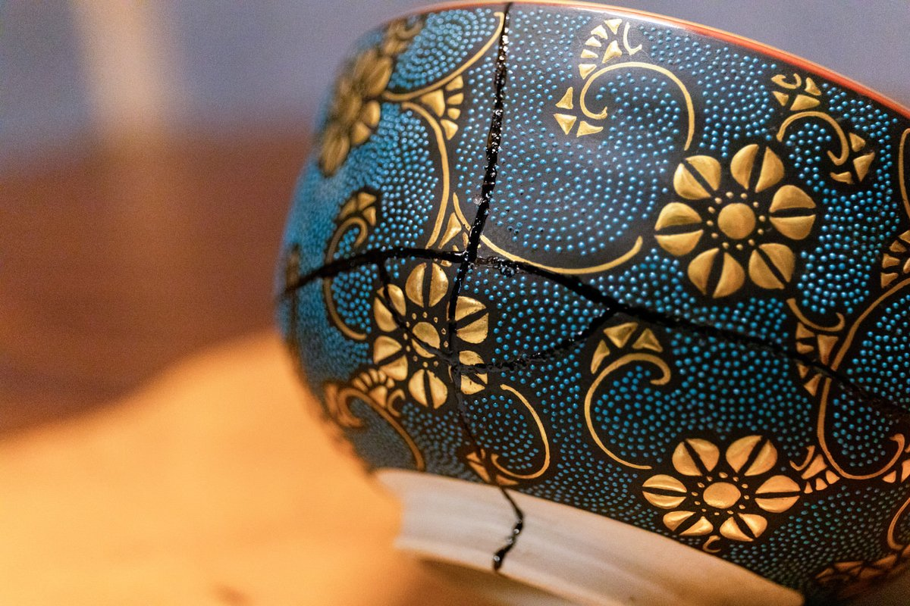
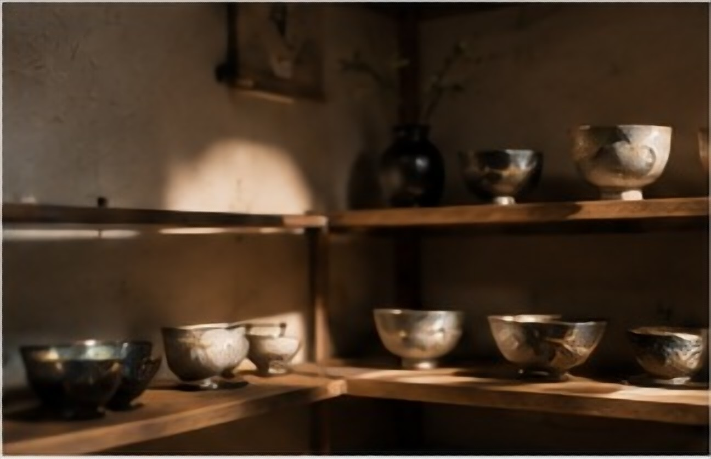

Urushi

Urushi Kintsugi Class
本漆 金継ぎ教室
天然の漆だけを使う本格コース。ご自分の大切な器を、全10回・約3か月かけて最初から最後まで自分の手で直します。
TOP ／ 一日体験・コース ／ 本漆 金継ぎ教室
Urushi
Urushi Kintsugi Class
天然の漆だけを使う本格コース。ご自分の大切な器を、全10回・約3か月かけて最初から最後まで自分の手で直します。
TOP ／ 一日体験・コース ／ 本漆 金継ぎ教室
About this courseコースについて
祖父母から受け継いだ湯のみ、旅先で出会ったお皿。本漆 金継ぎ教室では、ご自分の器を天然の漆だけで直します。合成の接着剤を使わないので、仕上がった器は食器として毎日使えます。

01
合成の接着剤は使いません。漆と金粉だけで直すので、完成した器は食器として安心して使えます。
02
漆は乾くのに時間がかかります。工程の間、器は専用の乾燥棚「室（むろ）」でお預かりします。
03
月2回からの予約制。お休みしても器はお預かりしたまま。前日までの連絡で振り替えもできます。
Curriculumカリキュラム
月2回・全10回で、ひとつの器を最初から最後まで自分の手で仕上げます。
MONTH 01 1か月目
MONTH 02 2か月目
MONTH 03 3か月目
※ 器の状態や大きさによって、回数が前後することがあります。最初の回で、先生と一緒に予定を立てます。

Muro器のお預かり
漆は、空気中の湿気を取りこんで固まるという、ほかの塗料にはない性質があります。教室では、温度と湿度を整えた専用の乾燥棚「室（むろ）」で器をお預かりし、工程ごとに1〜2週間かけてしっかり乾かします。
Safety & Care安全とお手入れ
漆は、肌につくとかぶれることがあります。
長く使うために、次のことを守ってください。
Detail料金・詳細
全10回の受講料 44,000円 ＋ 入会金 5,500円 ＝ 合計 49,500円（税込）。純金での仕上げを希望される場合は、器の大きさに合わせて別途お見積もりします。
After
After the course修了後
全10回を終えたら、自分のペースで通える「自主制作クラス」へ。
1回 3,300円で、ご自分の器を先生に相談しながら直せます。
Reservationご予約
まずは2時間の一日体験から。器も道具も教室でご用意するので、手ぶらでお越しください。
ご予約・お問い合わせはお電話のみで承っております
090-2323-4771受付時間 10:00 – 18:00（水・木・土・日）／ 開講日以外は留守番電話で折り返します
Accessアクセス
〒530-0016 大阪府大阪市北区中崎 0-0-0 2F
地下鉄谷町線「中崎町駅」2番出口より徒歩3分
阪急「大阪梅田駅」茶屋町口より徒歩10分
開講日 水・木・土・日 10:30 – 20:30
TEL 090-2323-4771（ご予約はお電話のみ）